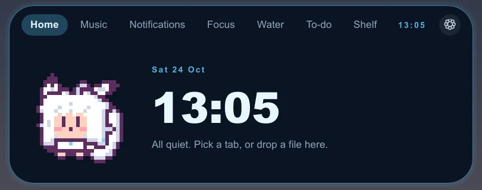

Open source · Rust · Windows
FubuNotch
A dynamic island for Windows in native Rust: now playing with synced lyrics, notifications, Pomodoro, water reminders, a file shelf and Claude Code permission prompts, with a pixel mascot living in it. Around 40 MB of RAM. Early test build.